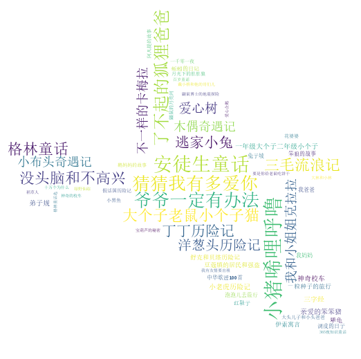

{% extends 'layout.html' %}
{% block header %}
<h1>低年级推荐书目<span style="font-family:fantasy;color:#fff;position:relative;top:-1px;font-size:35px;"><span style="margin-left:10px;margin-right:5px;">数据</span>展示</span></h1>
    <p>此阶段推荐的书目取自<span class="em">38</span>个网站中，低年级阶段推荐次数排名前<span class="em">35</span>的书目。</p>
    <p></p>
{% endblock %}

{% block body %}
    <span class="text-warning" style="font-size: 18px">低年级推荐次数中前35的书目频率</span>
    <div id="echarts1" style="width: 96%;height:500px;">
        <script type="text/javascript">
            // 基于准备好的dom，初始化echarts实例
            var myChart = echarts.init(document.getElementById('echarts1'));

            // 指定图表的配置项和数据
            var option = {
                title: {
                    {#show: false,#}
                    text: '低年级书目推荐频率统计',
                    left: 'center',
                    textStyle: {
                        color: '#3B77AA',
                        fontSize: 30,
                        fontWeight: 'normal',
                    }
                },
                grid: {
                    {#left:'3%',#}
                    {#right:'4%',#}
                    bottom: '10%',
                    containLabel: true
                },
                tooltip: {},
                legend: {
                    data: ['推荐']
                },
                xAxis: {
                    axisLabel: {
                        interval: 0,
                        rotate: 40
                    },
                    data: {{ book_list | tojson }}
                },
                yAxis: {},
                series: [{
                    barWidth: '50%',
                    name: '推荐次数',
                    type: 'bar',
                    data: {{ num_list }},
                    itemStyle: {
                        //通常情况下：
                        normal: {
                            color: function (params) {
                                var colorList = ['#c23531', '#2f4554', '#61a0a8', '#d48265', '#91c7ae', '#749f83', '#ca8622', '#bda29a', '#6e7074', '#546570', '#c4ccd3', '#c23531', '#2f4554', '#61a0a8', '#d48265', '#91c7ae', '#749f83', '#ca8622', '#bda29a', '#6e7074', '#546570', '#c4ccd3', '#c23531', '#2f4554', '#61a0a8', '#d48265', '#91c7ae', '#749f83', '#ca8622', '#bda29a', '#6e7074', '#546570', '#c4ccd3', '#c23531', '#2f4554', '#61a0a8', '#d48265', '#91c7ae', '#749f83', '#ca8622', '#bda29a', '#6e7074', '#546570', '#c4ccd3'];
                                return colorList[params.dataIndex];
                            },
                            label: {
                                show: true, //开启显示
                                position: 'top', //在上方显示
                                textStyle: { //数值样式
                                    color: 'black',
                                    fontSize: 16
                                }
                            }
                        },
                        //鼠标悬停时：
                        emphasis: {
                            shadowBlur: 10,
                            shadowOffsetX: 0,
                            shadowColor: 'rgba(0, 0, 0, 0.5)'
                        }
                    },
                }]
            };

            // 使用刚指定的配置项和数据显示图表。
            myChart.setOption(option);
        </script>
    </div>
    <hr>
    <p style="font-family:fantasy;color:rgb(51, 119, 170);position:relative;top:-1px;font-size:30px;text-align: center;">
               此阶段推荐书目图云</p>
{#    <span class="text-warning" style="font-size: 18px"></span>#}
    <div id="low-wordcloud" style="width: 96%;height: 500px" align="center">
        
    </div>
    <hr>
    <span class="text-warning" style="font-size: 18px">
        此图可以看出低年级推荐书目中属于 <br>
        我国的也占将近50%
    </span>
    <div id="echarts2" style="width: 96%;height:500px;">
        <script type="text/javascript">
            var myChart = echarts.init(document.getElementById('echarts2'));
            option = {
                title: {
                    text: '低年级推荐书目国家统计',
                    left: 'center',
                    textStyle: {
                    color: '#3B77AA',
                    fontSize: 30,
                    fontWeight: 'normal',
                }
                },
                tooltip: {
                    trigger: 'item',
                    formatter: '{a} <br/>{b} : {c} ({d}%)'
                },
                legend: {
                    orient: 'vertical',
                    left: 'left',
                    data: {{ country_list |tojson }}
                },
                color:['#ffdb5c','#8378ea','#96bfff','#37a2da', '#32c5e9','#67e0e3','#9fe6b8','#ff9f7f','#fb7293','#e062ae','#e7bcf3','#9d96f5'],
                series: [
                    {
                        name: '次数(占比)',
                        type: 'pie',
                        radius: '60%',
                        center: ['50%', '50%'],
                        data: {{ country_12 |tojson }},
                        emphasis: {
                            itemStyle: {
                                shadowBlur: 10,
                                shadowOffsetX: 0,
                                shadowColor: 'rgba(0, 0, 0, 0.5)'
                            }
                        }
                    }
                ]
            };

            myChart.setOption(option);
        </script>
    </div>

{% endblock %}